Effective visualisations communicate complex statistical and quantitative information facilitating insight, understanding, and decision making. But what is an effective graph? It is one that enables visual comparisons of data within the reviewers eye span, and adapts to the audience in a manner that best allows the key messages to be understood.
During the design of data visualisation it is helpful to keep in mind the purpose – the “Compared to what?”(Tufte 1990).
To facilitate effective comparisons there are a number of design options in the toolbox which can be used including layering, alignment, proximity and ordering. In this post we focus on how the aligment of a comparison is an imporant consideration.
Horizontal vs. vertical alignment
Alignment is another consideration for faciltiating comparisons. To be more specific, a vertical comparison is often easier to make judgments on than a horizontal comparison. To illustrate, consider three point estimates and associate uncertainty intervals.
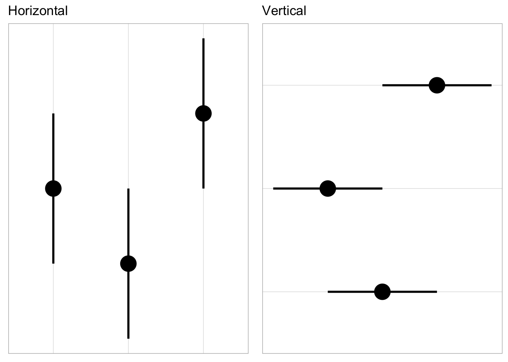
When appropriate, a vertical or “downward” comparison between groups helps with assessments especially when comparing across groups. This comes with the caveat that if the comparison is sequential or temporal (i.e. a comparison of longiatidnal effects), doing so may not make sense to the reviewer; time is often encoded better by flowing left to right.
Vertical alignment of comparisons can also help with adding in contextual informaiton such as labels.
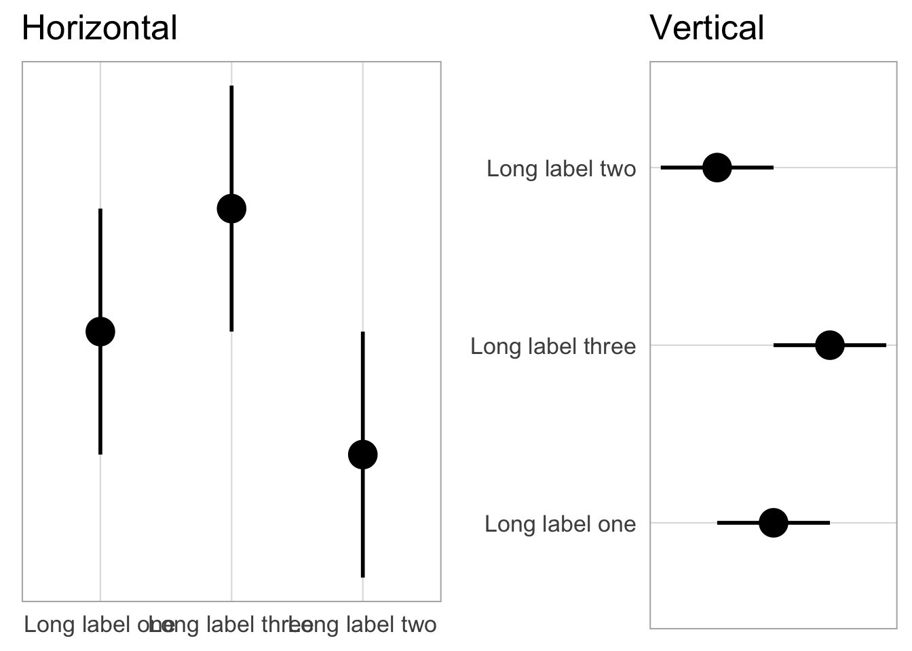
Overlaying
When comparing few factors (e.g. 2-3), consider overlaying in the same plot.
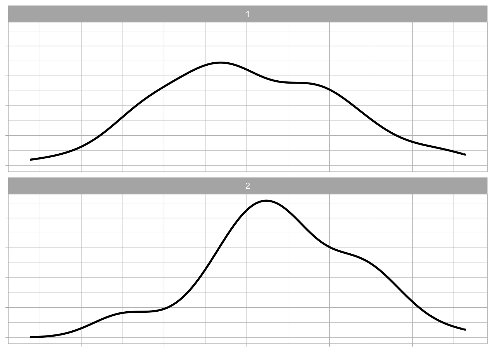
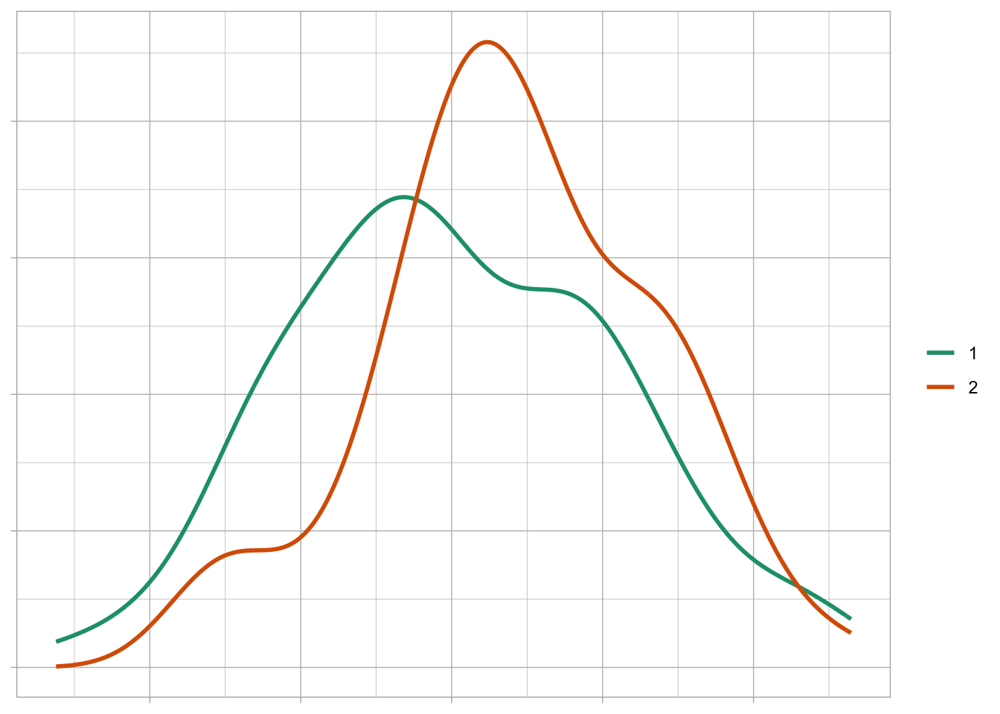
Changes: The two distributions are overlaid on the same graph and color added for further differentiation.
Distance
Keep things that are to be compared close together.
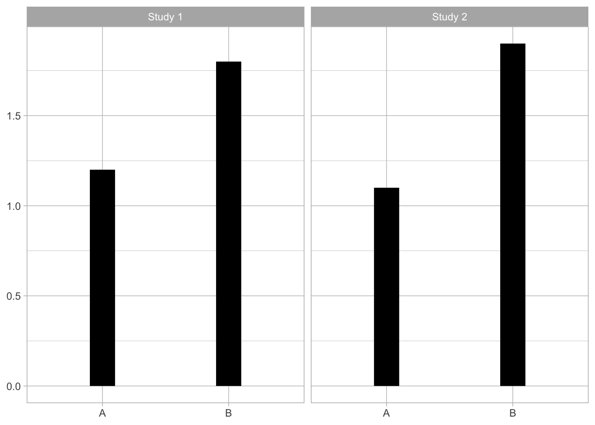
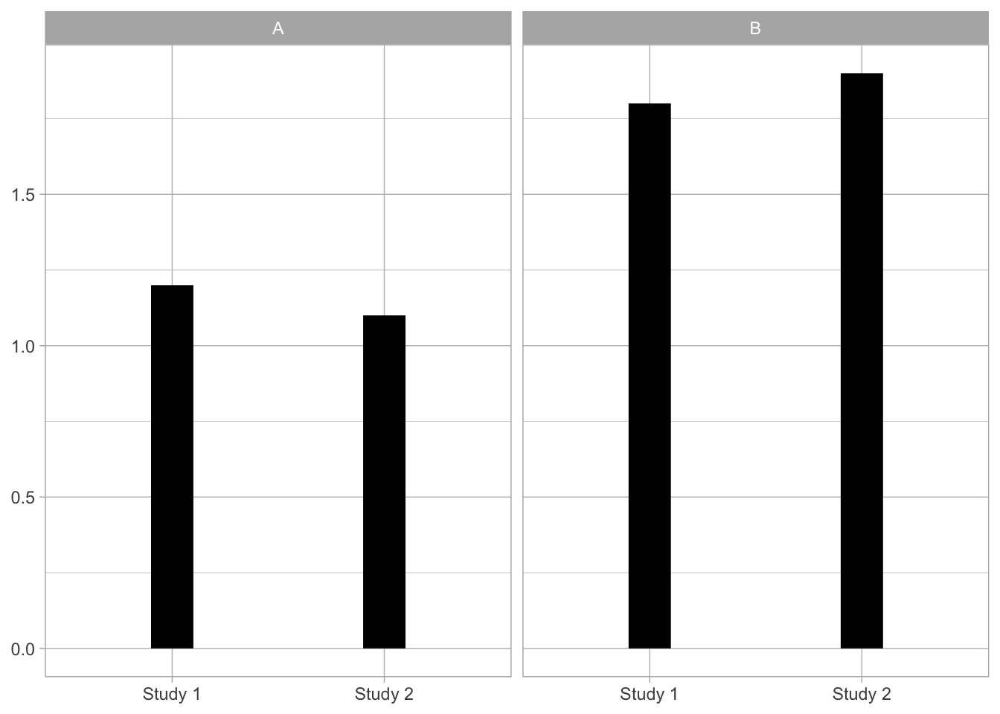
Changes: Study moved to x-axis and treatment group to the panel to allow comparison within treatment across study. Note: if the comparison of interest is A vs. B within study then the left plot would be more appropriate; keep in mind the “compared to what?”
Ordering
Ordering by values presented is helpful for comparing many categories.
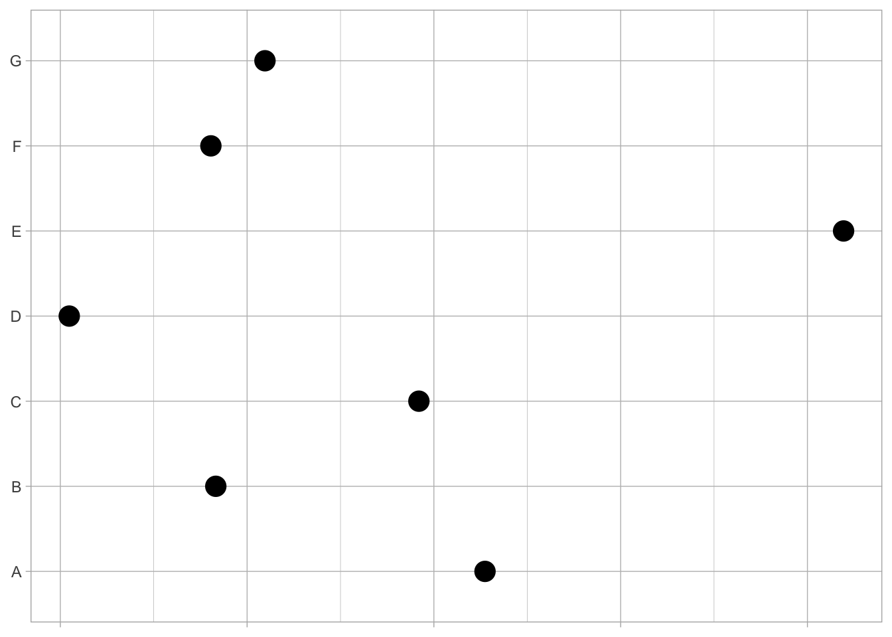
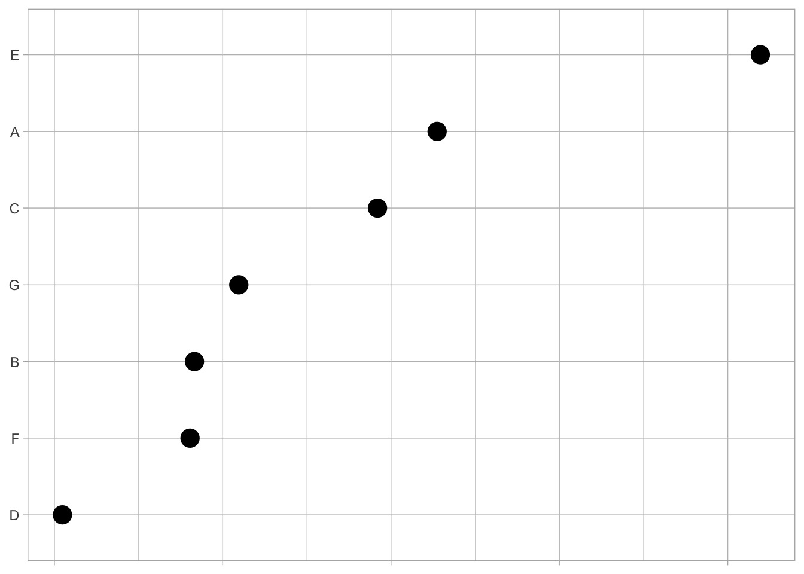
Changes: Factors ordered by observed value, largest to smallest.
Difference – do the math
Show the difference where applicable (e.g. plot the mean difference rather than two means) to avoid the reviewer doing so.
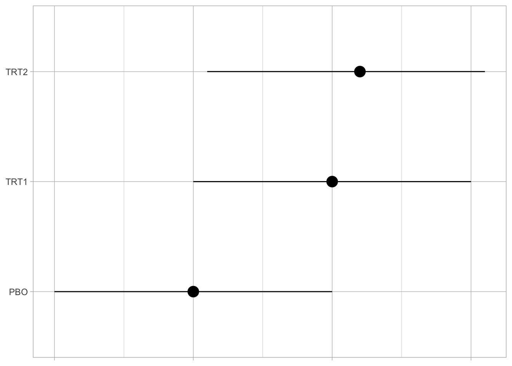
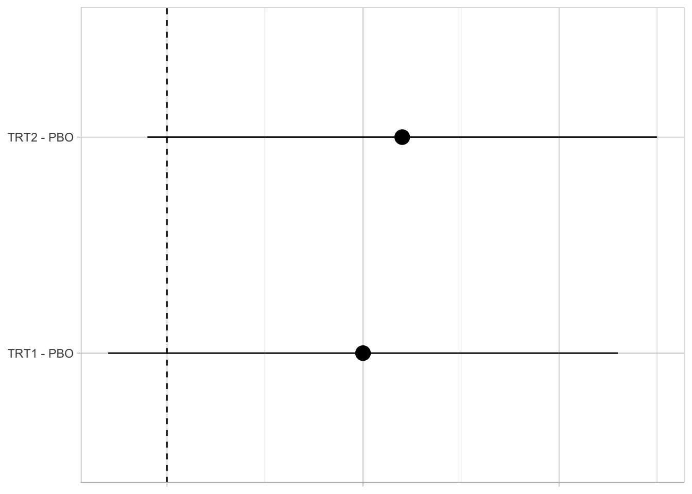
Changes: The difference to placebo is computed and shown directly for each treatment group.
Another example with longitudinal data
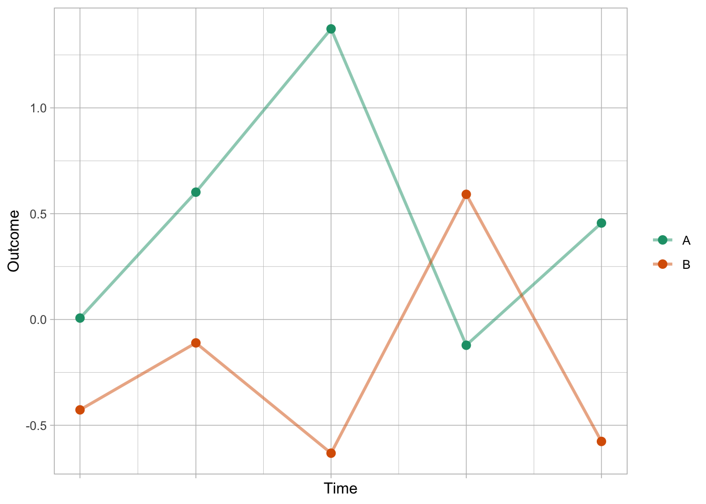
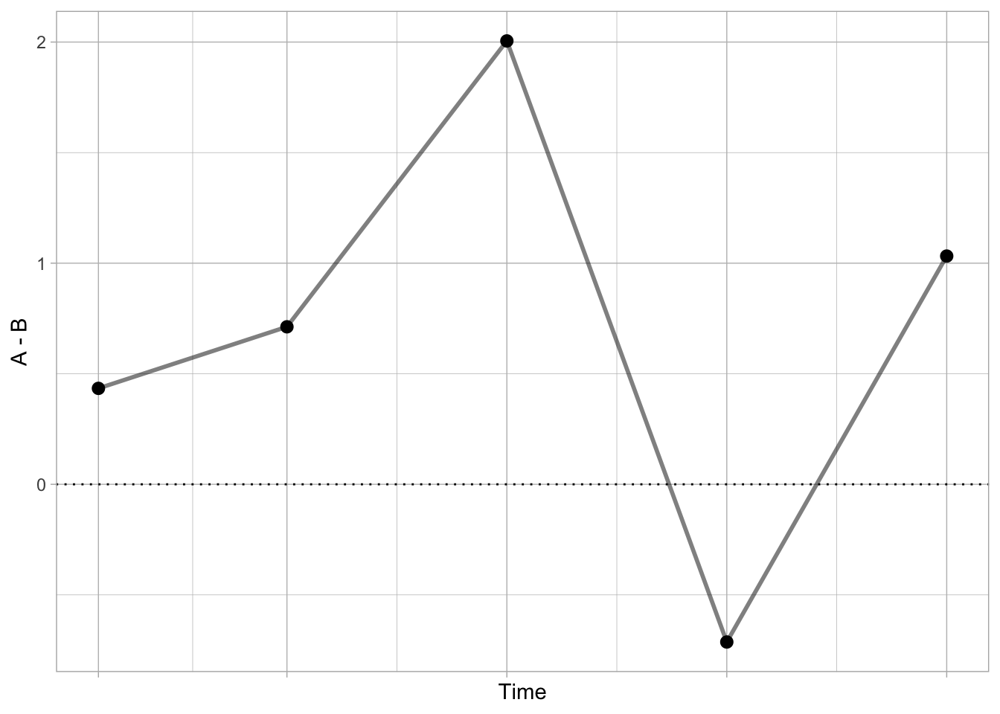
References
Tufte, Edward R. 1990. Envisioning Information. Cheshire, Conn.: Graphics Press.
Source Code
---title: "Compared to what?"description: | "Part 2: alignmentauthor: - name: "Graphics principles" url: https://graphicsprinciples.github.io/date: todaycategories: - comparisons - alignment - Rcode - examplesdraft: FALSEbibliography: lit.bib---```{r setup, include=FALSE, message=FALSE}knitr::opts_chunk$set(echo =FALSE, message =FALSE, warning =FALSE, error =FALSE)```Effective visualisations communicate complex statistical and quantitative information facilitating insight, understanding, and decision making. But what is an effective graph? It is one that enables visual comparisons of data within the reviewers eye span, and adapts to the audience in a manner that best allows the key messages to be understood. During the design of data visualisation it is helpful to keep in mind the purpose – the *"Compared to what?"* [@tufte1990].To facilitate effective comparisons there are a number of design options in the toolbox which can be used including layering, alignment, proximity and ordering. In this post we focus on how the aligment of a comparison is an imporant consideration. ```{r}library(tidyverse)library(gridExtra)# Set global ggplot themetheme_set(theme_light())# create a few themes for plotting. th <-theme(axis.title.x =element_blank(),axis.title.y =element_blank(),axis.text.x =element_blank(),axis.text.y =element_blank())thg <-theme(panel.grid.major =element_line(color ="grey"),panel.grid.minor =element_line(color ="grey"))th2 <-theme(axis.title.x =element_blank(),axis.title.y =element_blank())th3 <-theme(axis.title.x =element_blank(),axis.text.x =element_blank(),axis.title.y =element_blank())th4 <-theme(axis.title.y =element_blank(),axis.text.y =element_blank(),axis.title.x =element_blank())# Set seed for reproducibility set.seed(1972)# generate dataalignData <-tibble(x =factor(c(1, 2, 3)),x_lab =c("Long label one", "Long label two", "Long label three"),y =c(2, 1, 3),low =c(1, 0, 2),hi =c(3, 2, 4))```# Horizontal vs. vertical alignmentAlignment is another consideration for faciltiating comparisons. To be more specific, a vertical comparison is often easier to make judgments on than a horizontal comparison. To illustrate, consider three point estimates and associate uncertainty intervals. ```{r}a <- alignData %>%ggplot(aes(x = x,y = y,ymin = low,ymax = hi )) +geom_point(size =7) +geom_linerange(size =1) +theme(axis.title =element_blank(),axis.text =element_blank(),axis.ticks =element_blank(),panel.grid.major.y =element_blank(),panel.grid.minor.y =element_blank() ) +ggtitle("Horizontal")b <- alignData %>%ggplot(aes(x = x, y = y, ymin = low, ymax = hi)) +geom_point(size =7) +geom_linerange(size =1) +coord_flip() +theme(axis.title =element_blank(),axis.text =element_blank(),axis.ticks =element_blank(),panel.grid.major.x =element_blank(),panel.grid.minor.x =element_blank() ) +ggtitle("Vertical")grid.arrange(a, b, nrow =1)```When appropriate, a vertical or “downward” comparison between groups helps with assessments especially when comparing across groups. This comes with the caveat that if the comparison is sequential or temporal (i.e. a comparison of longiatidnal effects), doing so may not make sense to the reviewer; time is often encoded better by flowing left to right. Vertical alignment of comparisons can also help with adding in contextual informaiton such as labels. ```{r}a <- alignData %>%ggplot(aes(x = x_lab, y = y, ymin = low, ymax = hi)) +geom_point(size =7) +geom_linerange(size =1) +theme_light(base_size =16) +theme(axis.title =element_blank(),axis.text.y =element_blank(),axis.ticks =element_blank(),panel.grid.major.y =element_blank(),panel.grid.minor.y =element_blank() ) +ggtitle("Horizontal")b <- alignData %>%ggplot(aes(x = x_lab, y = y, ymin = low, ymax = hi)) +geom_point(size =7) +geom_linerange(size =1) +theme_light(base_size =16) +coord_flip() +theme(axis.title =element_blank(),axis.text.x =element_blank(),axis.ticks =element_blank(),panel.grid.major.x =element_blank(),panel.grid.minor.x =element_blank() ) +ggtitle("Vertical")grid.arrange(a, b, nrow =1)```# OverlayingWhen comparing few factors (e.g. 2-3), consider overlaying in the same plot. ```{r}n <-100set.seed(5)overlay <-data.frame(v=c(1,2), mu=c(1,1.4))overlay <- overlay[rep(c(1,2),n),]overlay$s <-rnorm(n=2*n,mean=overlay$mu, sd=1)ggplot(overlay, aes(x=s)) +facet_wrap(~v, ncol=1) +geom_line(stat="density",size=1) + th + thgggplot(overlay, aes(x=s, colour=factor(v))) +geom_line(stat="density", size=1) +scale_color_brewer(palette="Dark2", name="") + th +thg```**Changes**: The two distributions are overlaid on the same graph and color added for further differentiation. ## DistanceKeep things that are to be compared close together. ```{r}distance <-data.frame(expand.grid(study=c("Study 1","Study 2"), trt=c("A","B")))distance$y <-c(1.2, 1.1, 1.8, 1.9)ggplot(distance, aes(x=trt, y=y, ymin=0, ymax=y)) +facet_wrap(~study, ncol=2) +geom_linerange(size=10) + th2 + thgggplot(distance, aes(x=study, y=y, ymin=0, ymax=y)) +facet_wrap(~trt, ncol=2) +geom_linerange(size=10) + th2 + thg```**Changes**: Study moved to x-axis and treatment group to the panel to allow comparison within treatment across study. Note: if the comparison of interest is A vs. B within study then the left plot would be more appropriate; keep in mind the “compared to what?”## OrderingOrdering by values presented is helpful for comparing many categories. ```{r}ordering <-data.frame(v=LETTERS[1:7], y=runif(7))ggplot(ordering, aes(x=y, y=v)) +geom_point(size=5) + th3 + thgordering <-arrange(ordering, y)ggplot(ordering, aes(x=y, y=factor(v, levels=ordering$v))) +geom_point(size=5) + th3 + thg```**Changes**: Factors ordered by observed value, largest to smallest.# Difference – do the mathShow the difference where applicable (e.g. plot the mean difference rather than two means) to avoid the reviewer doing so. ```{r}difference <-data.frame(grp=c("PBO", "TRT1", "TRT2"), y=c(1,2,2.2), low=c(0,1,1.1), hi=c(2,3,3.1))ggplot(difference, aes(x=grp, y=y, ymin=low, ymax=hi)) +geom_pointrange(size=1) + th3 + thg +coord_flip()difference2 <-data.frame(grp=c("TRT1 - PBO","TRT2 - PBO"), y=c(1,1.2), low=c(-0.3,-0.1), hi=c(2.3,2.5))ggplot(difference2, aes(x=grp, y=y, ymin=low, ymax=hi)) +geom_hline(yintercept=0, linetype=2) +geom_pointrange(size=1) +scale_y_continuous(breaks=c(0,1,2)) +coord_flip() + th3 +thg```**Changes**: The difference to placebo is computed and shown directly for each treatment group.Another example with longitudinal data```{r}# another difference example with longitudinal data. set.seed(2)rm(difference)difference <-data.frame(expand.grid(grp=c("A","B"), day=c(1,7,14,21,28))) %>%arrange(grp, day)difference <- difference %>%mutate(true_mean=ifelse(grp=="A", 0.5, -0.5), y=rnorm(dim(difference)[1], true_mean, 0.55)) ggplot(difference, aes(x=day, y=y, colour=grp)) +geom_point(size=2.5) +geom_line(size=1, alpha=0.5) +scale_x_continuous(breaks=unique(difference$day)) +scale_colour_brewer(palette="Dark2", name="") +labs(x="Time", y="Outcome") +theme(axis.text.x=element_blank()) +thgdifference2 <-spread(select(difference, day, grp, y), grp, y) %>%mutate(difference=A-B)ggplot(difference2, aes(x=day, y=difference)) +geom_point(size=2.5) +geom_line(size=1, alpha=0.5) +geom_hline(yintercept=0, linetype=3, colour="black") +scale_x_continuous(breaks=unique(difference$day)) +labs(x="Time", y="A - B") +theme(axis.text.x=element_blank()) + thg```